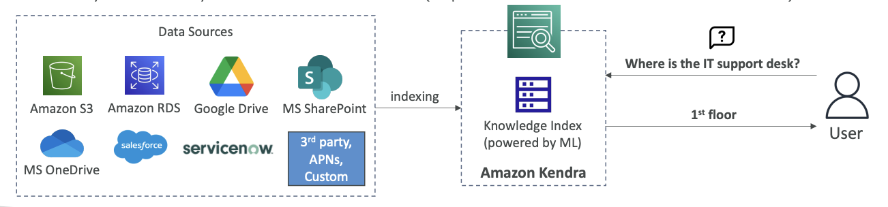

Amazon Kendra - Document Search Service
Another machine learning service on AWS is called Amazon Kendra. This is a fully-managed document search service that is powered by machine learning and allows you to extract answers from within a document.
Supported Document Types
Amazon Kendra can work with various document formats including:
- Text files
- PDF documents
- HTML files
- PowerPoint presentations
- Microsoft Word documents
- FAQs
- And many other document types
(see the diagram below)
How Amazon Kendra Works
You have a lot of data sources where these documents may be located. These documents are indexed by Amazon Kendra, which builds internally a knowledge index powered by machine learning.(see the diagram below)
End-User Benefits
From an end-user perspective, Amazon Kendra provides natural language search capabilities just like you would use on Google.(see the diagram below)
Example:
- User asks: "Where is the IT support desk?"
- Kendra replies: "1st floor"

This works because Kendra knows from all the resources that it indexed that the IT support desk was on the 1st floor, which is quite awesome.
Additional Features
Normal Search with Learning
You can also perform normal searches, and Kendra will learn from user interaction and feedback to promote preferred search results. This is called incremental learning.
Fine-Tuning Search Results
You can fine-tune the search results based on various factors such as:
- Importance of data
- Freshness of content
- Custom filters you define
Exam Tip
From an exam perspective, whenever you see a document search service mentioned, think Amazon Kendra.
Amazon Kendra VS Amazon Q Business
Core Purpose & User Experience
Amazon Kendra is primarily a search service that uses semantic and contextual similarity to decide whether a text chunk or document is relevant to a retrieval query. Unlike traditional keyword-based search, Amazon Kendra uses semantic and contextual similarity—and ranking capabilities to return relevant documents or snippets.
Amazon Q Business is a generative AI–powered assistant that can answer questions, provide summaries, generate content, and securely complete tasks based on data and information in enterprise systems. It's designed as a conversational AI assistant that can have tailored conversations, solve problems, generate content, take actions, streamline tasks and more.
Key Functional Differences
1. Response Style
- Kendra: Returns search results with relevant document snippets and links
- Amazon Q Business: finds and synthesizes information from across your enterprise through a conversational experience and generates comprehensive, conversational responses
2. Capabilities Beyond Search
- Kendra: Focused on intelligent search and document retrieval
- Amazon Q Business: Users can take actions in third-party applications directly within Amazon Q Business and build lightweight AI apps to automate repetitive tasks. It can also perform tasks like summarization, Q&A, or data analysis on uploaded files
3. Integration & Actions
- Kendra: Primarily a search backend service
- Amazon Q Business: provides administrative controls and has a ready-to-use library of over 50 actions across popular business applications and platforms such as Jira, Salesforce, PagerDuty, and more
How They Work Together
Interestingly, Amazon Q Business can actually use Amazon Kendra as a retriever! If you're already an Amazon Kendra customer, you can connect your Amazon Kendra index with data sources attached to your Amazon Q Business application and use it as a retriever.
When to Use Which?
Use Amazon Kendra when you need:
- Advanced enterprise search capabilities
- Direct integration into existing applications via APIs
- High-availability service suitable for production workloads with semantic search
Use Amazon Q Business when you need:
- A conversational AI assistant for employees
- Content generation and task automation
- Integration with multiple business applications for taking actions
- A complete workplace productivity solution
Think of it this way: Kendra is like having a super-smart search engine for your company data, while Amazon Q Business is like having an AI assistant that can search, understand, generate content, and take actions across your business systems.